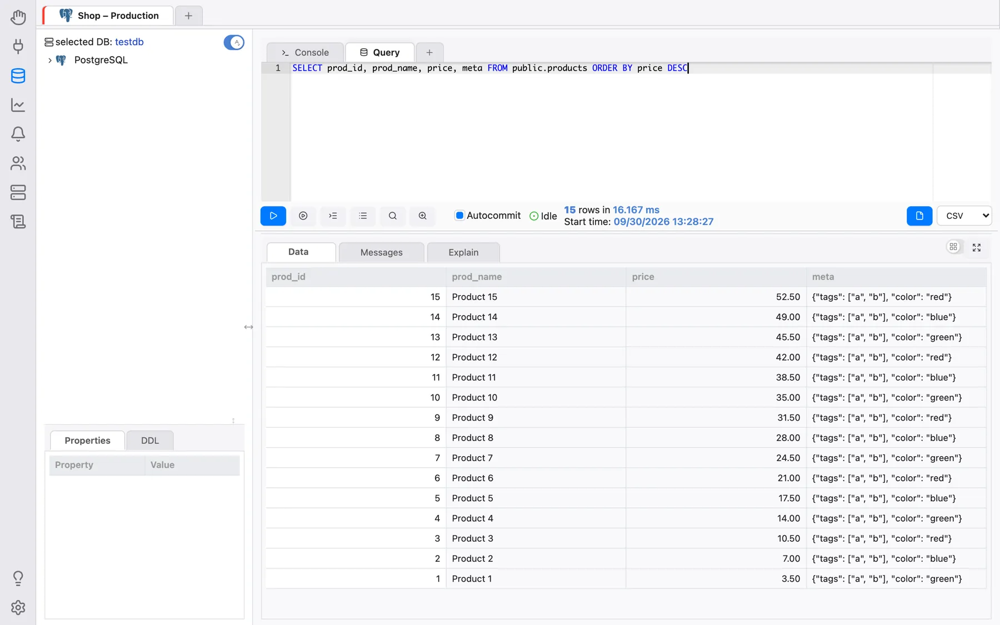
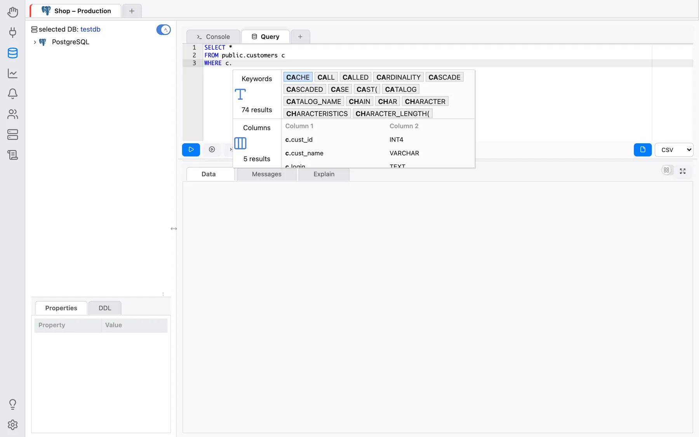
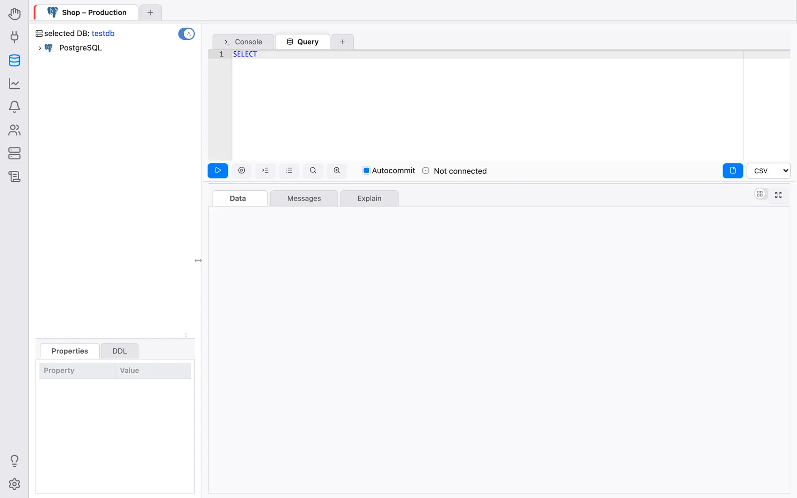
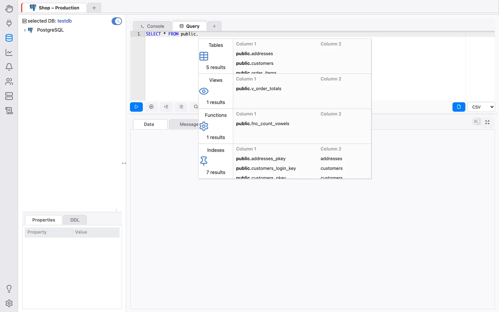

Scrittura di query SQL
Il tipo più comune di scheda interna è la Scheda query, che contiene i seguenti elementi. Le scorciatoie da tastiera indicate sotto sono quelle predefinite su Windows/Linux; su macOS le scorciatoie proprie di OmniDB usano Ctrl al posto di Alt. Tutte possono essere modificate in Impostazioni > Scorciatoie.

- 1) Intestazione della scheda: Puoi vedere il nome della scheda e, passando il mouse, un’icona per chiuderla. Mentre nella scheda è in esecuzione una query vedrai un indicatore di attività; se termina mentre stai lavorando su un’altra scheda, viene mostrato un segno di spunta. Facendo clic con il tasto destro sulla scheda e scegliendo Rinomina scheda puoi rinominarla.
- 2) Aggiungi scheda: Puoi aggiungere rapidamente un’altra scheda interna (Scheda query o Scheda console) facendo clic sull’icona più.
- 3) Editor SQL: Editor SQL completo con evidenziazione della sintassi SQL,
ripiegamento del codice, Trova e Sostituisci (
Ctrl-FeCtrl-H), una linea guida verticale (la sua colonna si imposta in Impostazioni > Formattazione) e un componente di completamento automatico, spiegato più avanti. Il clic destro nell’editor offre Copia, Salva come snippet e Usa snippet (vedi Snippet). Vedi Scorciatoie da tastiera dell’editor per l’elenco completo delle scorciatoie dell’editor (selezione, cursori multipli, navigazione, raggruppamento del codice, ecc.). - 4) Esegui: Il testo contenuto nell’editor SQL verrà eseguito sul database
attualmente attivo quando fai clic su questo pulsante (o premi
Alt-Q). Se nell’editor SQL è presente del testo selezionato, viene eseguito solo il testo selezionato. L’editor può contenere più istruzioni separate da punto e virgola; vengono eseguite una dopo l’altra e la griglia mostra il risultato dell’ultima. Una volta che il comando è in esecuzione, viene mostrato un pulsante rosso Annulla, che ti permette di annullare l’esecuzione (oppure premiAlt-C). - 5) Esegui istruzione al cursore: Esegue solo la singola istruzione in cui si
trova il cursore, senza doverla prima selezionare. Con il cursore subito dopo un
;viene eseguita l’istruzione successiva. - 6) Rientra SQL: Questo pulsante formatta in modo ordinato qualsiasi codice SQL
scritto nell’editor SQL (scorciatoia
Alt-S), seguendo lo stile scelto in Impostazioni > Formattazione (rientro, stile della virgola, maiuscole/minuscole delle parole chiave). - 7) Cronologia comandi: Tutti i comandi eseguiti sulla connessione corrente vengono memorizzati nella cronologia comandi, accessibile facendo clic su questo pulsante. Puoi filtrarla per intervallo di date e per testo per trovare il comando SQL di cui hai bisogno.
- 8) Explain (solo PostgreSQL): Esegue la tua query SQL anteponendo
EXPLAIN(scorciatoiaAlt-W). I risultati verranno mostrati in forma testuale e grafica nella scheda Explain (per maggiori dettagli, vedi Visualizzazione dei piani di query). - 9) Explain Analyze (solo PostgreSQL): Come il pulsante Explain, ma esegue la
query SQL con
EXPLAIN (ANALYZE, BUFFERS), che eseguirà effettivamente la query (scorciatoiaAlt-E). - 10) Autocommit (solo PostgreSQL): Quando abilitato, ogni query eseguita verrà confermata (commit) sul database. Quando disabilitato, OmniDB avvia una transazione e, all’esecuzione di una query, l’interfaccia mostrerà pulsanti che permettono all’utente di eseguire Commit o Rollback. L’utente può anche mantenere la transazione aperta ed eseguire altri comandi.
- 11) Stato del backend (solo PostgreSQL): Quando apri una nuova scheda query, lo stato è Non connesso, poiché OmniDB non ha ancora avviato un backend PostgreSQL. Quando esegui la prima query, OmniDB avvia un nuovo backend e lo mantiene collegato alla scheda query (ogni scheda query ha il proprio backend). Lo stato del backend (Inattivo, In esecuzione, Inattivo in transazione, ecc.) verrà mostrato in questo campo. Quando chiudi la scheda query, OmniDB termina il backend.
- 12) Tipo di file di esportazione: CSV, TSV, XLSX, JSON, XML o Markdown.
- 13) Esporta dati: Facendo clic su questo pulsante, OmniDB esegue la query corrente ed esporta l’intero risultato in un file del tipo scelto. Nell’app desktop si apre una finestra nativa Salva con nome che ti permette di scegliere direttamente dove salvarlo, e OmniDB conferma con File esportato in: …. Quando invece esegui OmniDB nel browser tramite OmniDB Server, il file viene prima scritto nella cartella temporanea del server, e l’area dei risultati mostra poi Il file è pronto. con un link Salva che lo scarica tramite il browser. La codifica CSV/TSV e il delimitatore CSV si impostano in Impostazioni > Esportazione.
- 14) Risultati dati: Se la query è una
SELECT, verrà mostrata una griglia con i risultati; la prima colonna resta fissa mentre scorri in orizzontale, e passando il mouse sull’intestazione di una colonna se ne vede il nome completo. Se la query è una DML o DDL, verrà mostrato il messaggio restituito dal RDBMS. Quando ci sono più righe di quelle del primo blocco, Recupera altro carica il blocco successivo e Recupera tutto il resto. Fai clic destro su una cella per Copia o Visualizza contenuto; i valori JSON e XML vengono mostrati con l’evidenziazione della sintassi. - 15) Messaggi (solo PostgreSQL): Qui verranno mostrati eventuali messaggi
(come quelli generati dal comando
RAISE NOTICE). - 16) Vista Explain (solo PostgreSQL): Mostra un componente completo per visualizzare il piano di esecuzione di PostgreSQL in forma testuale o grafica.
Il divisore tra l’editor (con la sua barra degli strumenti) e i risultati può essere trascinato per dare più spazio all’uno o agli altri.
Conferma di sicurezza per le istruzioni distruttive
Prima di eseguire un’istruzione che inizia con DROP o TRUNCATE, oppure
un UPDATE/DELETE senza clausola WHERE, la scheda query chiede
conferma (Questa istruzione è distruttiva e non può essere annullata. Eseguirla comunque?,
oppure Questa istruzione non ha una clausola WHERE e interesserà TUTTE le righe. Eseguirla
comunque?). È una rete di sicurezza contro gli errori in buona fede, non un sistema di
permessi — esamina solo l’inizio del testo (dopo i commenti).
Una volta eseguite, le schede vengono salvate anche nel database utente di OmniDB (titolo e contenuti), quindi la prossima volta che apri OmniDB le vedrai tutte aperte. Inoltre, ogni comando eseguito in una scheda query viene salvato nella cronologia comandi di quella connessione.
Completamento automatico SQL
L’editor SQL ha una funzionalità che aiuta molto nella creazione di nuove query: il
completamento automatico del codice SQL. Apri i suggerimenti con Ctrl-Space
(Option-Space su macOS). Con questa funzionalità è possibile completare
automaticamente le colonne contenute in una tabella referenziata tramite un alias: digita l’alias,
il carattere . e poi apri il completamento automatico:

Se l’utente non avvia il completamento automatico con il cursore vicino a un alias di tabella, il componente mostrerà più categorie di dati. Digitando nel campo di filtro, gli elementi di tutte le categorie verranno filtrati:

Il componente di completamento automatico è anche in grado di identificare alcune informazioni
contestuali. Ad esempio, se digiti il nome di uno schema e poi il carattere ., potrai
filtrare tra gli oggetti contenuti solo in quello schema:

Dopo :: (un cast di tipo PostgreSQL) vengono proposti solo tipi di dato. La scelta
di una parola chiave aggiunge anche ciò che la segue sempre (ad esempio uno spazio dopo
SELECT, o la parentesi aperta dopo COALESCE). Quali categorie vengano
proposte (parole chiave, database, ruoli, tablespace, schemi, estensioni, tabelle, viste, colonne,
funzioni, indici) si imposta in Impostazioni > Completamento automatico.
Nota che per i RDBMS diversi da PostgreSQL, il componente di completamento automatico funziona solo per le colonne delle tabelle.